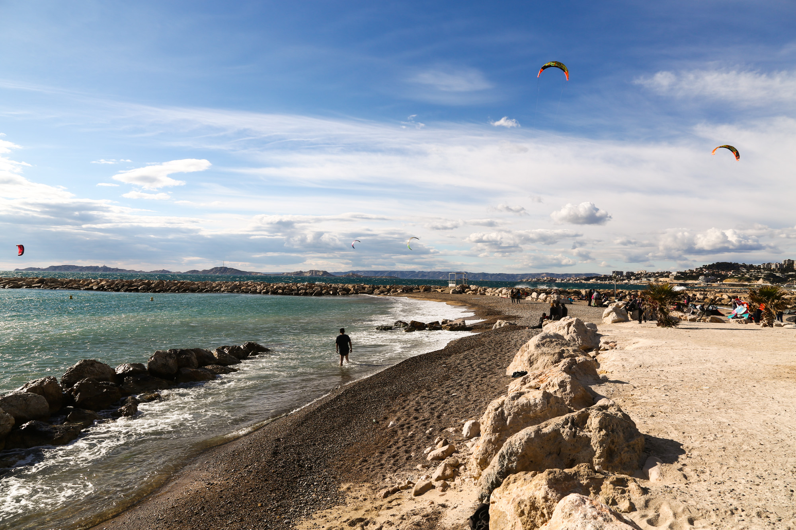

MARSEILLE,
la station balnéaire familiale et naturelle des Calanques à l'Estaque !
Zones de baignade sous surveillances à Marseille

La plage de Corbière Fortin
La plage de Corbière Batterie
La plage de Corbière La Lave

La plage du Frioul St Estève
La plage de des Catalans

La plage du Prophète
La plage de Prado Nord
(Petit Roucas)

La plage de Prado Nord
(Grand Roucas)

La plage de Prado Sud
La plage de l'Huveaune
(David)
La plage de Borély
La plage de Bonneveine

La plage de Vieille-Chapelle
La plage de Pointe-Rouge
La plage de Sormiou
Zones de baignade non surveillées à Marseille
Anse des Sablettes
Les Goudes
(La Maronnaise)

Calanque de Morgiou